Asset Master keeps track of everything your company owns — laptops, phones, monitors, vehicles, furniture — and answers three questions at any moment: what do we have, where is it, and who has it?
| Idea | What it means |
|---|---|
| Asset | One physical thing the company owns (one laptop, one car). Each asset has a unique asset tag such as LAP-00001. |
| Category | A type of asset (Laptops, Vehicles…). The category decides the tag prefix (LAP), the extra fields you record (e.g. RAM, plate number) and the useful life for depreciation. |
| Employee | A person who can receive assets. Employees do not need a login. |
| User | A person who signs in to the system. What they can do depends on their role. |
| Assignment (custody) | Handing an asset to an employee. It stays open until the asset is returned. Every handover and return gets a numbered receipt. |
| Status | In stock available · Assigned with an employee · In maintenance being repaired · Retired no longer used · Lost missing. |
| Condition | New, Good, Fair, Poor, Damaged — recorded on every handover and return. |
| Audit log | A permanent, tamper-evident record of every important action: who did what, and when. |
Register it (In stock) → assign it to an employee (Assigned, handover receipt printed and signed) → the employee returns it (return receipt) → back In stock, or In maintenance for repair, or Retired/Lost at the end. Every step is recorded on the asset's timeline.
Open Chrome or Edge and go to the address your administrator gives you, for example http://localhost:5222 on the server itself or https://assets.yourcompany.com for the team.
Some deployments use a licence. If the server administrator has switched licensing off, skip this section: there is no licence page or user limit and the system is ready for normal use after setup. Otherwise, until a valid licence is active the system is locked: only the Super Administrator can sign in, and only the Licence and My account pages work.
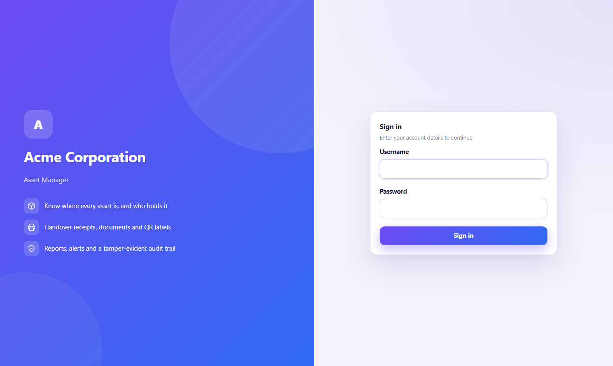
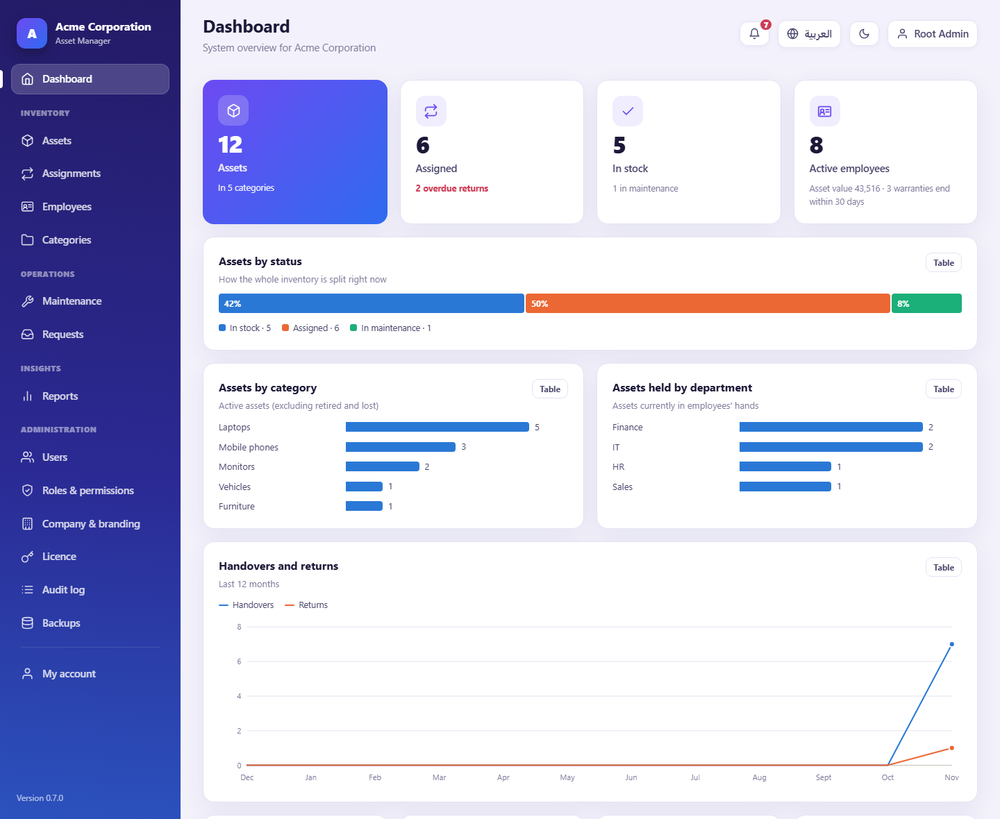
Pages are grouped. You only see the pages your role allows.
| Group | Pages |
|---|---|
| — | Dashboard — the overview. |
| Inventory | Assets, Assignments, Employees, Categories |
| Operations | Maintenance, Requests |
| Insights | Reports |
| Administration | Users, Roles & permissions, Company & branding, Licence, Audit log, Backups |
| — | My account |
On a phone the menu is hidden; tap the ☰ button at the top left to open it.
| Button | What it does |
|---|---|
| Page buttons | Each page puts its own main buttons here (for example Add asset, Export to Excel). |
| Bell 🔔 | Opens your alerts (below). The red number is how many items need attention; it pulses when something is critical. |
| العربية / English | Switches the language for you only. Your choice is remembered. |
| Moon / Sun | Switches between dark and light mode. |
| Your name | Opens a menu with My account and Sign out. |
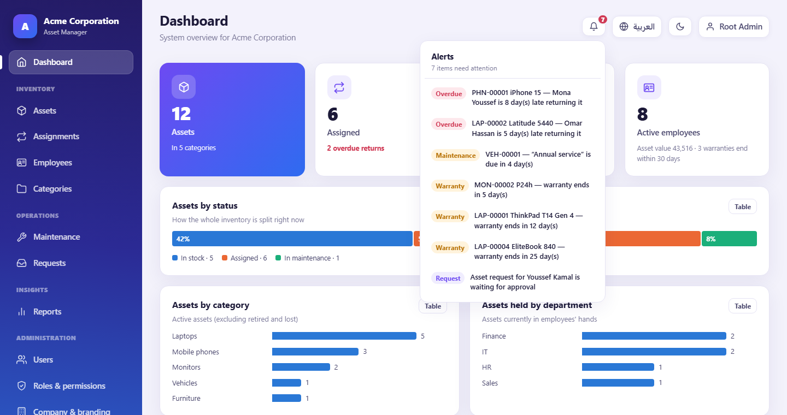
| Alert | Meaning — and what happens when you click it |
|---|---|
| Overdue | An employee has kept an asset past its expected return date. Opens the asset. |
| Warranty | A warranty ends within the configured number of days (default 30). Opens the asset. |
| Maintenance | Scheduled maintenance is due soon, or is already late (red). Opens the Maintenance page. |
| Request | An asset request is waiting for approval (approvers only). Opens Requests. |
| Decision | A request you made was approved or rejected in the last 7 days. Opens Requests. |
Alerts are calculated live and refresh every minute. You never dismiss them — they disappear by themselves when the cause is fixed (the asset is returned, the warranty date is updated, the maintenance is started…). Each person only sees alerts their role allows. Optionally the same list can be sent by e-mail every morning (chapter 19).
The dashboard is the first page after signing in. It shows the state of the whole inventory at a glance.
| Card | What it shows |
|---|---|
| Assets | Total number of assets and in how many categories. |
| Assigned | How many assets are with employees, and how many returns are overdue (red). |
| In stock | How many are available, and how many are in maintenance. |
| Active employees | Number of active employees, total asset value (purchase cost of assets not retired or lost) and warranties ending soon. |
| Active users · Roles · Licence · Last backup | System information: signed-in accounts, licence state and expiry, and when the last full backup was made. |
Hover over (or tap) any bar or point to see exact numbers. Every chart has a Table button that shows the same numbers as a table; click Chart to go back.
Recent activity lists the latest actions from the audit log (only for users who may see the audit log). Getting started is a checklist for a new installation — activate the licence, upload the logo, add users, create categories, add employees, register the first asset, make a backup — each with an Open button that takes you to the right page.
The list of everything the company owns.
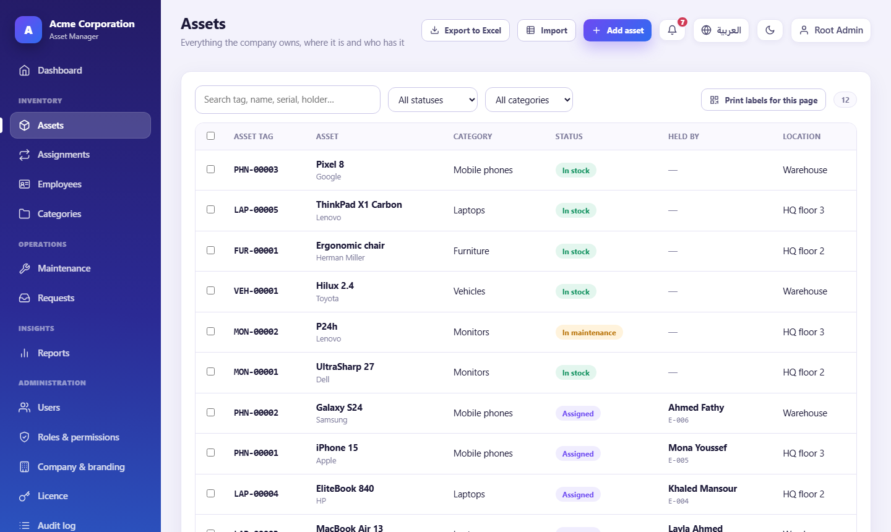
| Button / control | What it does |
|---|---|
| Export to Excel | Downloads the assets shown by the current search and filters as an Excel file, including custom fields, holder and status (chapter 15). |
| Import | Adds or updates many assets at once from an Excel file (chapter 15). |
| Add asset | Opens the form to register a new asset (below). |
| Search box | Finds assets by tag, name, serial number, brand, model, location or the holder's name / employee number. Results update as you type. |
| All statuses | Shows only one status (e.g. only Assigned). |
| All categories | Shows only one category. |
| Tick boxes | Select assets for printing QR labels. The box in the header selects the whole page. Selections are kept when you change page. |
| Print labels for this page / Print N labels | Opens the label sheet for the ticked assets — or for the whole page if nothing is ticked (chapter 14). |
| Number badge | How many assets match the search. |
| Arrows at the bottom | Next / previous page (25 assets per page). |
| Clicking a row | Opens the asset's detail window (chapter 6). |
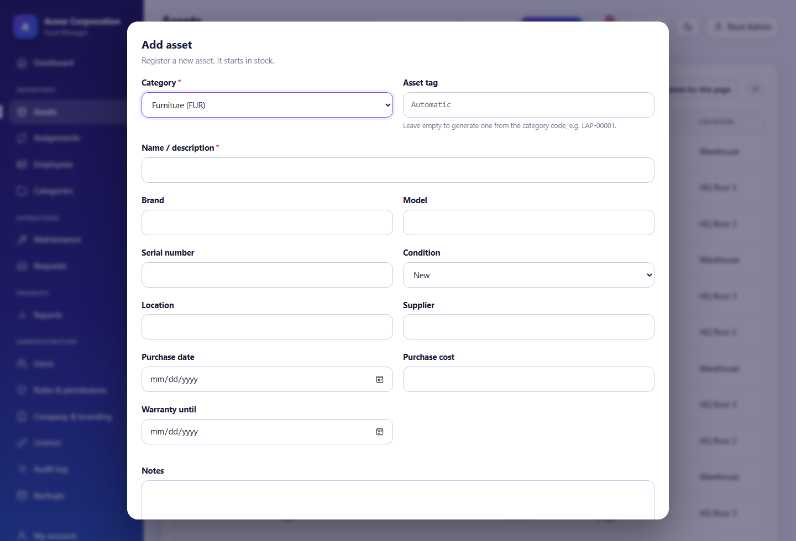
| Field | Explanation |
|---|---|
| Category * | Required. Changing it shows that category's extra fields. |
| Asset tag | Leave empty to get the next automatic tag (e.g. LAP-00007), or type your own existing sticker number. Must be unique. |
| Name / description * | What it is, e.g. “ThinkPad T14 Gen 4”. |
| Brand, Model | Optional details. |
| Serial number | Must be unique across all assets (the system refuses duplicates). |
| Condition | New, Good, Fair, Poor or Damaged. |
| Location, Supplier | Where it is kept and who sold it. |
| Purchase date, Purchase cost | Used for asset value and depreciation reports. |
| Warranty until | Creates a warranty alert before it ends. |
| Category fields | The extra fields defined for the category (RAM, plate number…). Fields marked * are required. |
| Notes | Free text, several lines. |
Click Save. A new asset always starts In stock. A message shows the tag it received.
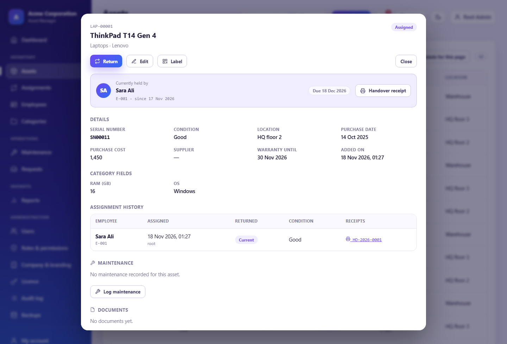
| Button | When it appears — what it does |
|---|---|
| Assign | Only when the asset is In stock. Hands it to an employee (chapter 7). |
| Return | Only when the asset is Assigned. Takes it back (chapter 7). |
| Edit | Changes any detail (tag, serial, category, custom fields…). Every change is recorded in Activity. |
| Change status | Not available while Assigned. Moves the asset to In stock, In maintenance, Retired or Lost, with a reason. |
| Label | Opens a printable QR label for this asset. |
| Delete | Only for assets that were never assigned (e.g. created by mistake). Assets with history are retired instead, never deleted. |
| Close | Closes the window (or press Esc). |
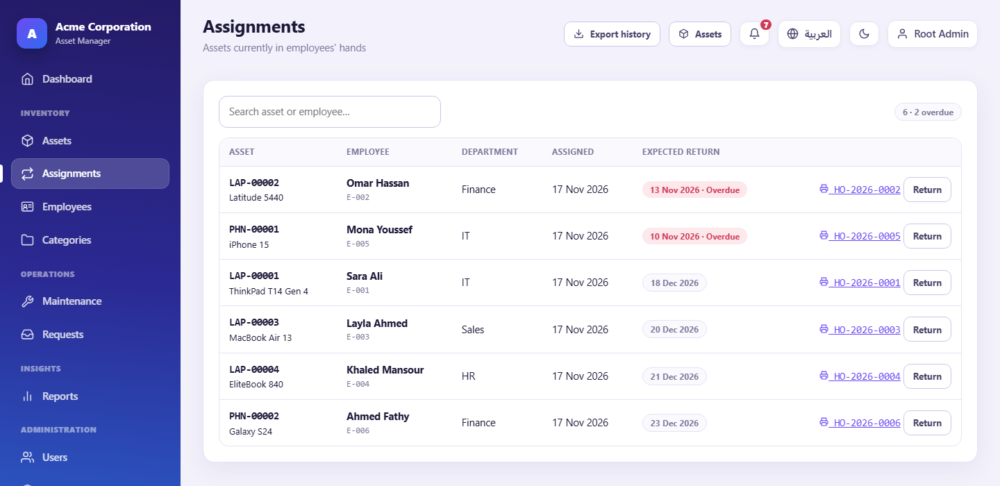
| Button / column | What it does |
|---|---|
| Search | Find by asset tag/name or employee name/number. |
| Export history | Downloads the complete history of all handovers and returns to Excel. |
| Assets | Goes to the Assets page. |
| Expected return | Red with Overdue when late. Overdue rows are listed first. |
| Receipt link (e.g. HO-2026-0003) | Opens the handover receipt. |
| Return | Takes the asset back directly from this list. |
| Clicking a row | Opens the asset. |
Every handover gets a number like HO-2026-0001 and every return a number like RT-2026-0001. Numbers restart each year and are never reused.
Click Handover receipt on the asset, or any receipt number in an assignment history (asset window, employee window, Assignments page). The receipt opens in a new browser tab.
Company logo and name, receipt title and number, date and time, employee (name, number, department, job title), asset (tag, name, category, brand/model, serial, custom fields), condition, expected return or original handover date, notes, the terms text (configurable — chapter 19) and two signature lines (employee and the user who handed over / received it).
| Button | What it does |
|---|---|
| Print / Save as PDF | Opens the browser's print window. Choose your printer — or choose “Save as PDF” as the printer to get a PDF file. The page is laid out for A4. |
| العربية / English | Shows the receipt in Arabic or English, independent of your interface language. |
| Attach signed copy | After the employee signs, scan or photograph the paper and upload it here. A link to the signed copy then appears on the receipt and on the asset's documents. |
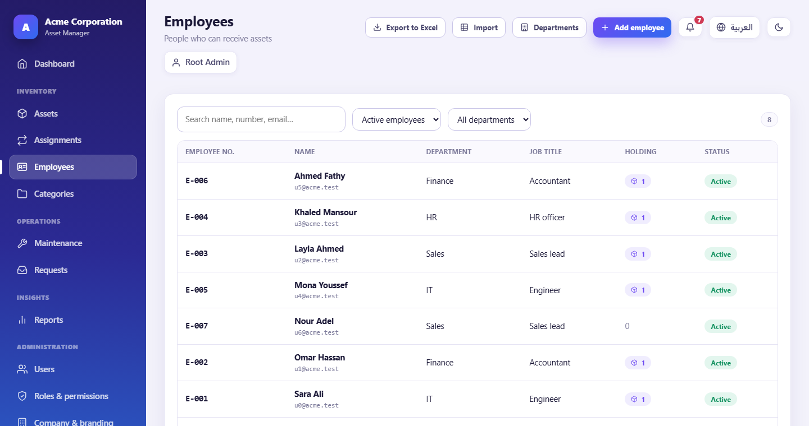
| Button / control | What it does |
|---|---|
| Export to Excel | Downloads the employees shown by the current filters. |
| Import | Adds or updates many employees from Excel (chapter 15). |
| Departments | Opens the department list: add (English/Arabic name + Add), rename (pencil, then Save) or delete (bin — only for departments with no employees). |
| Add employee | Registers a new employee. |
| Search | By name, employee number, e-mail or job title. |
| Status filter | Active employees (default), Left the company, or Everyone. |
| Department filter | One department only. |
| Holding column | How many assets the employee holds right now. |
| Clicking a row | Opens the employee's detail window. |
Employee no. (required, unique), Full name in English and/or Arabic (at least one), Department, Job title, Status (Active / Left), E-mail, Phone, Notes.
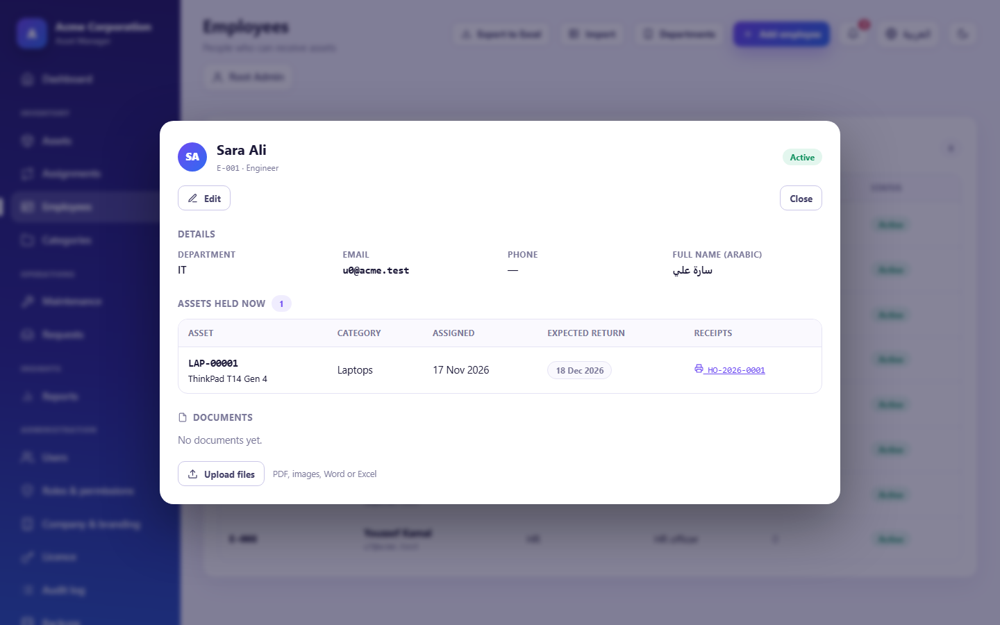
Categories are the types of assets. Create them before adding assets.
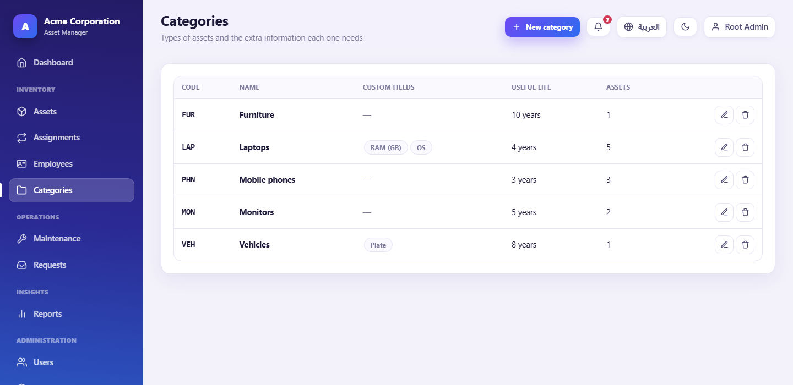
| Button | What it does |
|---|---|
| New category | Creates a category. |
| Pencil | Edits a category and its fields. |
| Bin | Deletes a category — only when it has no assets. |
| Field | Explanation |
|---|---|
| Name (English / Arabic) | At least one language. |
| Code * | 2–8 letters or digits, e.g. LAP. Used as the prefix of automatic tags (LAP-00001). Suggested automatically from the English name. Changing it later only affects new tags. |
| Description | Optional. |
| Useful life (years) | For straight-line depreciation in the value report. Leave empty if this kind of asset is not depreciated (e.g. land). |
Extra information recorded for assets of this category. Click Add field for each one:
| Part | Explanation |
|---|---|
| Label (English / Arabic) | The field's name, e.g. “RAM (GB)” / “الذاكرة”. |
| Type | Text, Number, Date, List (choose from options) or Yes / No. |
| Options | For List only: the choices separated by commas, e.g. “Windows, macOS, Linux”. |
| Required | Assets of this category cannot be saved without this field. |
| Bin | Removes the field. (Values already stored are kept but no longer shown.) |
A log of repairs, services, inspections and upgrades — with vendor, cost and result — plus scheduled maintenance that reminds you before it is due.
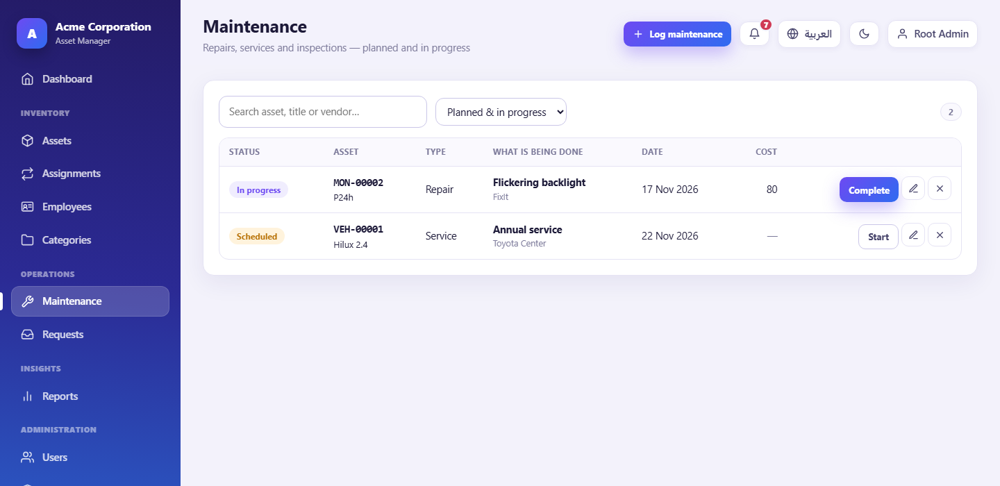
Scheduled planned for a date · Overdue scheduled date has passed · In progress work started · Completed · Cancelled.
| Button / control | What it does |
|---|---|
| Log maintenance | Records new work (also available inside each asset's window). |
| Search | By asset tag/name, title or vendor. |
| Filter | Planned & in progress (default), Scheduled, In progress, Completed, Cancelled, All. |
| Start | For scheduled work: starts it now (optionally taking the asset out of service). |
| Complete | For work in progress: enter the final cost, the result, and — if the asset was taken out of service — its condition after the work. |
| Pencil | Edits the record. |
| ✕ | Cancels the work. |
| Clicking a row | Opens the asset. |
The total cost of maintenance appears in the Maintenance & costs report.
A simple approval workflow: someone asks for an asset for an employee, an approver decides. Typical use: HR requests a laptop for a new joiner; the asset manager approves and hands over in one step.
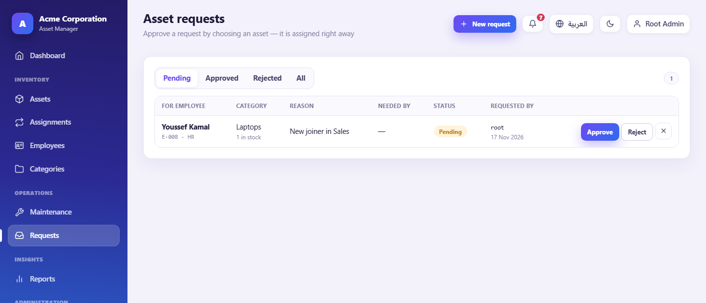
| Button | Who — what it does |
|---|---|
| Pending / Approved / Rejected / All | Switches the list. |
| New request | Requesters: choose the employee, the category (or “Any category”), the needed by date and the reason (required), then Send request. |
| Approve | Approvers: shows the in-stock assets of the requested category. Pick one, optionally set an expected return date and a note, then Approve & assign. The asset is assigned to the employee immediately (with a handover receipt) and the request becomes Approved. |
| Reject | Approvers: a reason is required; the requester sees it. |
| ✕ (Cancel request) | The requester (for their own pending requests) or an approver. |
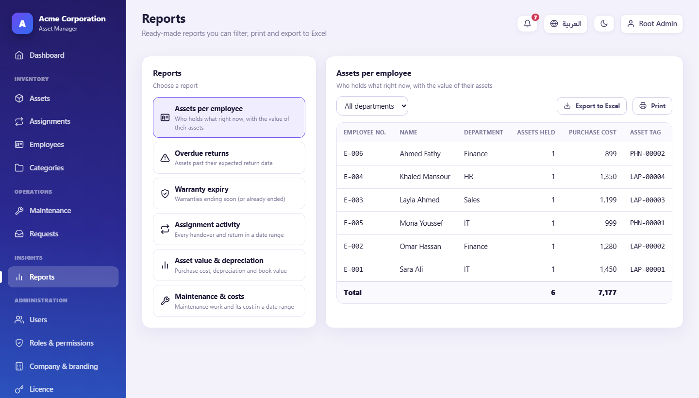
| Report | What it answers — filters |
|---|---|
| Assets per employee | Who holds what right now, how many and their total value. Filter: department. |
| Overdue returns | Assets past their expected return date, with the number of days late. |
| Warranty expiry | Warranties ending in the next 30/60/90/180/365 days; tick Include expired to also see ended ones. |
| Assignment activity | Every handover and return in a period: last 7/30/90 days, this month, this year, or a custom date range. |
| Asset value & depreciation | Purchase cost, accumulated depreciation and book value, summarised per category and then per asset. Filters: category, Include retired & lost. |
| Maintenance & costs | Maintenance work and its cost in a period. Filters: status and date range. |
| Button | What it does |
|---|---|
| Export to Excel | Downloads the report with the same filters, always with all rows and a total row. |
| Prints the report alone (menu and buttons are hidden). Use “Save as PDF” for a PDF. | |
| Clicking a row | Opens that asset. |
On screen a report shows at most 2,000 rows (with a notice); totals always include everything, and the Excel export contains every row.
Each asset can have a printed sticker with a QR code. Scanning it with a phone camera opens that asset in the system.
Open the phone camera and point it at the label; tap the link that appears. The system opens (sign in if needed) and shows that asset's detail window directly. If the tag no longer exists, a message says so.
You can also use Scan QR / barcode inside Asset Master to use the phone camera and search by the asset tag, serial number, IMEI or a unique category field. Camera access requires a secure connection (HTTPS); local HTTP testing may require a browser-specific development setting. On an installed phone app, open the scanner from the app menu. If camera access is unavailable, type or paste the code in the manual entry box.
| Topic | Details |
|---|---|
| Employee columns | emp_no* · full_name_en · full_name_ar · department · job_title · email · phone · status (active/left) · notes. Departments that don't exist yet are created automatically. |
| Asset columns | category_code* · tag · name* · brand · model · serial_no · condition · location · purchase_date · purchase_cost · supplier · warranty_until · notes · assigned_to · plus one column per custom field (e.g. ram_gb). |
| assigned_to | An employee number: the new asset is handed to that employee straight away (with a receipt). Perfect for loading the current situation on day one. |
| Update existing | Tick “Update … that already exist” to change records that are already in the system (matched by employee number / asset tag). Only the columns present in the file are changed. |
| Accepted values | Dates as 2026-03-31, 31/03/2026 or real Excel dates. Conditions and statuses in English or Arabic (good / جيد). Numbers like 1,200.50. Files: .xlsx or .csv. |
| Limits | Up to 5,000 rows per file. |
Export to Excel on Assets, Employees and Reports, and Export history on Assignments. Files open in Excel with the sheet set to right-to-left when you use Arabic. Exports use the same column names as the import template — so you can export, edit in Excel and import back with “update existing”.
Assets and employees have a Documents section: invoices, warranty cards, photos, contracts, ID copies. Signed receipts are attached to the receipt (chapter 8) and appear in the asset's activity.
| Button | What it does |
|---|---|
| Upload files | Choose one or several files. Allowed: PDF, images (PNG, JPG, WebP, GIF), Word and Excel, up to 25 MB each. |
| File name | Opens the file in a new tab (PDFs and images) or downloads it. |
| Download arrow | Always downloads. |
| Bin | Deletes the file (asks for confirmation; recorded in the audit log). |
For safety the system checks the real content of every file, not just its name — a renamed program or web page is refused. Who may see or add documents follows the record: e.g. anyone who can view assets can open asset documents; adding needs the manage permission.
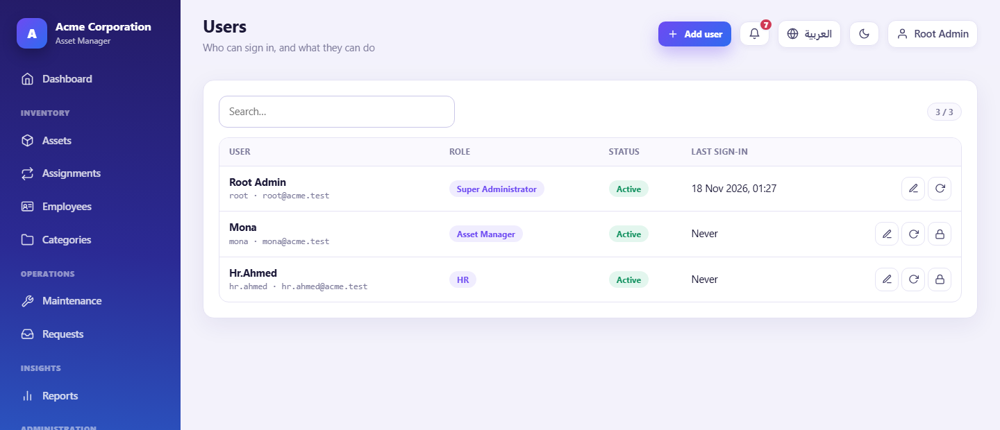
| Button | What it does |
|---|---|
| Add user | Username, full name, e-mail, role, and optionally a temporary password (leave empty to generate a strong one). The temporary password is shown once — give it to the person privately. They must change it at first sign-in. |
| Pencil | Changes name, e-mail or role. |
| Circular arrow (Reset password) | Generates a new temporary password and signs the user out everywhere. |
| Lock / tick (Disable / Enable) | Disabling signs the user out immediately and blocks sign-in; the account and its history stay. You cannot disable yourself. |
| Search | By username, name or e-mail. |
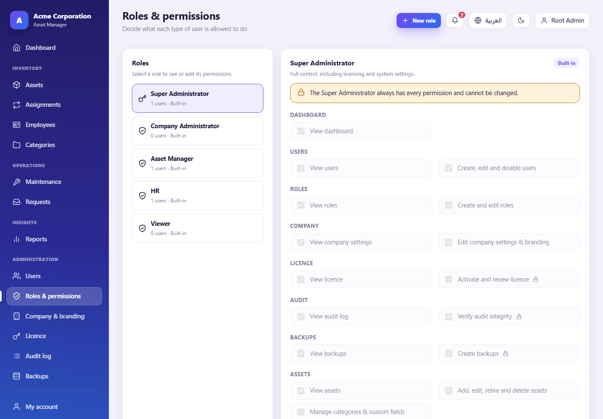
| Can… | Super Admin | Company Admin | Asset Manager | HR | Viewer |
|---|---|---|---|---|---|
| See dashboard, assets, reports | ✓ | ✓ | ✓ | ✓ | ✓ |
| Add / edit / retire assets, categories | ✓ | ✓ | ✓ | — | — |
| Assign and return assets | ✓ | ✓ | ✓ | — | — |
| See employees | ✓ | ✓ | ✓ | ✓ | ✓ |
| Add / edit employees & departments | ✓ | ✓ | — | ✓ | — |
| See maintenance | ✓ | ✓ | ✓ | — | ✓ |
| Log and close maintenance | ✓ | ✓ | ✓ | — | — |
| Request assets | ✓ | ✓ | ✓ | ✓ | — |
| Approve requests | ✓ | ✓ | ✓ | — | — |
| Manage users, roles, company settings | ✓ | ✓ | — | — | — |
| See licence, audit log, backups | ✓ | ✓ | — | — | — |
| Activate licence, make/download backups, verify audit log | ✓ | — | — | — | — |
| Permission | Allows |
|---|---|
| View dashboard | The Dashboard page. |
| View / Create, edit and disable users | The Users page / changing users. |
| View / Create and edit roles | The Roles page / changing roles. |
| View / Edit company settings & branding | Company page, alert & e-mail settings. |
| View / Activate and renew licence 🔒 | Licence page / installing licences. |
| View audit log / Verify audit integrity 🔒 | Audit log page / integrity check. |
| View backups / Create backups 🔒 | Backups page & health / making, verifying and downloading backups. |
| View assets | Assets, Assignments, asset details, documents, charts, receipts. |
| Add, edit, retire and delete assets | Asset changes, status changes, asset import, asset documents. |
| Manage categories & custom fields | Categories page. |
| Assign and return assets | Assign / Return, signed receipt upload. |
| View employees / Add and edit employees & departments | Employees page / changes, employee import and documents. |
| View reports & asset values | Reports page. |
| View maintenance / Log and close maintenance | Maintenance page / changes. |
| Request assets for employees / Approve requests | Requests page: creating / approving and rejecting. |
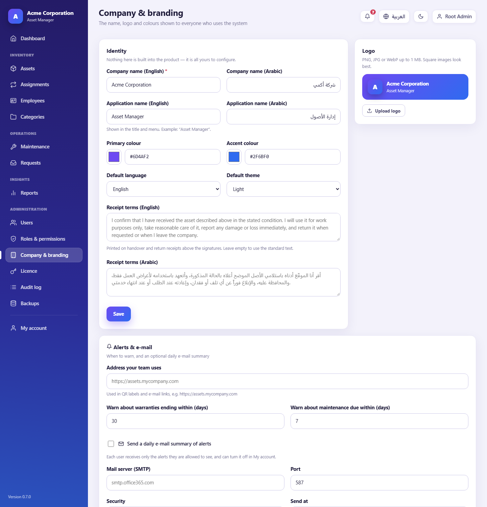
| Field / button | What it does |
|---|---|
| Company name (EN / AR) | Shown in the menu, sign-in page, receipts, labels and e-mails. |
| Application name (EN / AR) | The name of the system shown under the company name, e.g. “Asset Manager”. |
| Primary / Accent colour | The brand colours (buttons, menu highlights, gradients). Pick with the colour box or type a code like #6D4AF2. |
| Default language / theme | What new users and the sign-in page start with. |
| Receipt terms (EN / AR) | The text printed above the signatures on handover and return receipts. Empty = the standard text. |
| Save | Saves the identity fields. |
| Upload logo / Remove | PNG, JPG or WebP up to 1 MB; square images look best. |
| Field / button | What it does |
|---|---|
| Address your team uses | The real web address of the system. Used in QR labels and e-mail links. |
| Warn about warranties ending within (days) | Default 30. |
| Warn about maintenance due within (days) | Default 7. |
| Send a daily e-mail summary of alerts | Turns the morning e-mail on. Each user receives only the alerts their role allows, and only on days when there is something. |
| Mail server (SMTP), Port, Security | Your company's mail server, e.g. smtp.office365.com, port 587, STARTTLS. (SSL/TLS uses port 465; “None” only for internal servers.) |
| Send at | The hour of the daily e-mail (server time zone). |
| User name, Password | The mailbox login. The password is stored encrypted and never shown again; leave it empty to keep the saved one. |
| Sender address | e.g. assets@yourcompany.com. |
| Allowed e-mail domains for access requests | Optional comma-separated list such as company.com, company.com.eg. Only exact domains are accepted; add each subdomain separately. Leave empty to allow any domain. |
| Allow people to request access | Shows or hides the public Request access link on the sign-in page. Each request still needs an administrator's approval. |
| Send test e-mail to me | Saves and sends a test message to your own e-mail address. |
| Send today's summary now | Sends the daily e-mail immediately to everyone subscribed. |
| Part / button | What it does |
|---|---|
| Status | Active, Grace period (expired, still working for a few days — renew now), Expired, Not activated, Revoked, Wrong server, Clock problem. |
| Details | Licensed to, edition, issued, expires (with days left), users active / allowed, features, licence ID, activation date. |
| Activation request code + Copy | Send this to your vendor to receive a licence for this server. The Deployment ID identifies this installation. |
| Activate licence / Choose file | Installs a new or renewed licence (paste the text or choose the file). |
| Advanced | Installs a revocation list from the vendor (rarely needed). |
| Licence history | Every activation, renewal and state change. |
A permanent record of important actions: sign-ins (and failed attempts), every change to assets, employees, categories, users, roles, settings, licences, backups, imports, documents, maintenance and requests. Entries cannot be edited or deleted.
| Control | What it does |
|---|---|
| Search | Searches inside the details. |
| User | Only one username. |
| Action starts with… | e.g. asset. for all asset actions, auth. for sign-ins. |
| Arrows | Pages of 25 entries. |
| Verify integrity | (Super Administrator) Checks the whole chain. Each entry contains a fingerprint of the previous one, so if anyone changed the database directly, the check reports the first altered entry. |
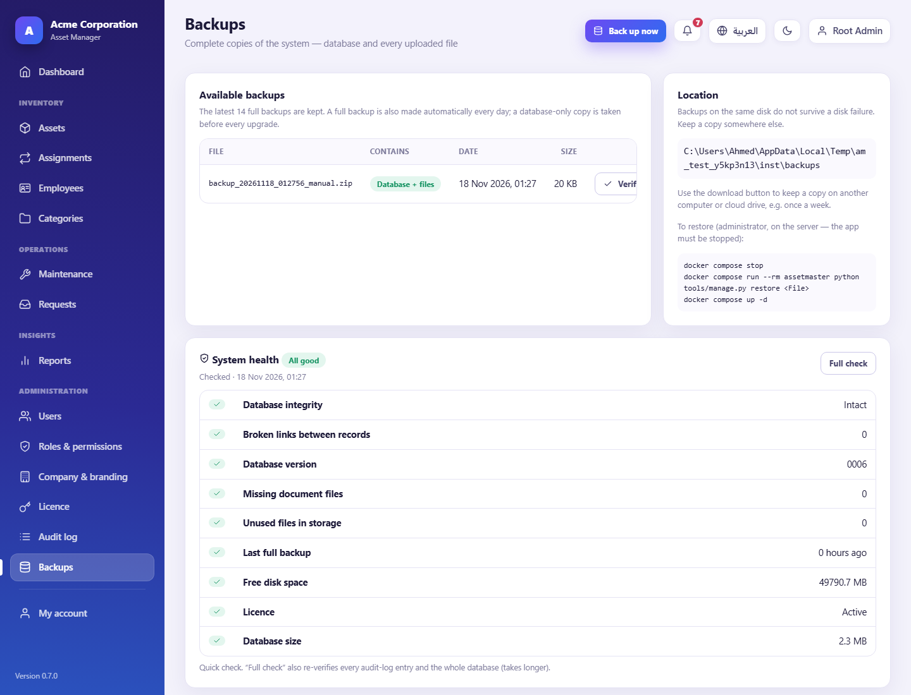
A full backup is one file containing the database and every uploaded file (documents, signed receipts, logo), with a checksum for each file. One is made automatically every day; the newest 14 are kept. A database-only copy is also taken automatically before every upgrade.
| Button | What it does |
|---|---|
| Back up now | Makes a full backup immediately. |
| Verify | Re-checks every file in the backup and the database integrity. “Backup is intact” — or “Backup is damaged — do not rely on it”. |
| Download arrow | (Super Administrator) Downloads the backup so you can keep a copy on another computer or cloud drive. |
Restoring is done on the server by the administrator, with the application stopped (the commands are shown on the page and in chapter 26). The current state is first saved automatically as a “before-restore” backup, and a damaged backup is never restored.
| Check | Meaning |
|---|---|
| Database integrity, broken links | The database file is healthy. |
| Database version | All upgrades are applied. |
| Audit log (tamper check) | Only in Full check: every audit entry is re-verified. |
| Missing document files / unused files | Uploaded files deleted from the server / leftover files. |
| Last full backup | Warning if older than 36 hours. |
| Free disk space, licence, database size | Warning below 1 GB free; licence state. |
Each problem line explains what to do. Full check runs everything, including the audit chain (takes a little longer).
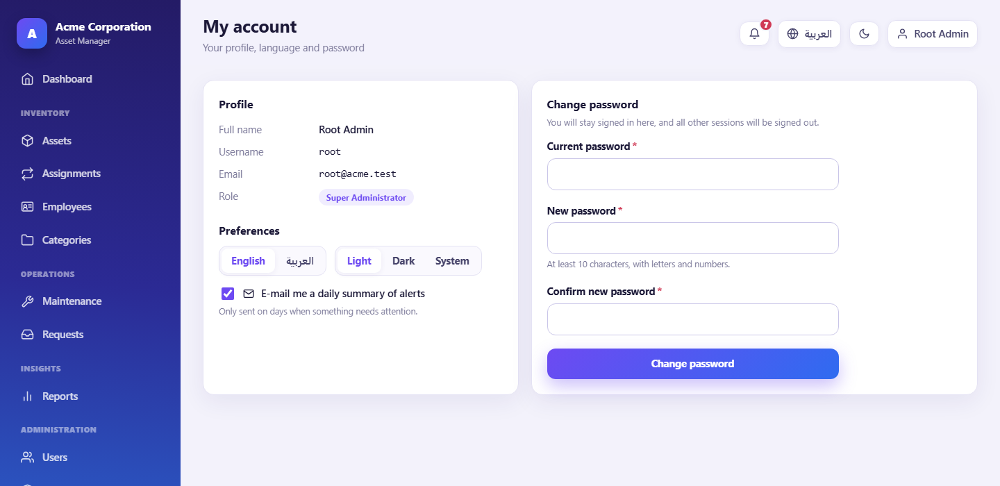
These rules protect your records. When something is refused, the message tells you why.
| Message (short) | Why — and what to do |
|---|---|
| Already assigned | An asset can only be with one person. Return it first. |
| Only in-stock assets can be assigned | It is in maintenance, retired or lost. Change its status first. |
| Return before changing status | Status of an assigned asset changes only through Return. |
| Has assignment history, cannot be deleted | Retire the asset instead — history is never deleted. |
| Employee still holds assets | Return them before marking the employee as Left. |
| Employee has history | Mark as Left instead of deleting. |
| Category / department in use | Move or remove its assets / employees first. |
| Tag / serial / employee number already used | These must be unique. |
| Date cannot be in the past | Expected return dates must be today or later. |
| Only pick an asset from the requested category | When approving a request. |
| Licence does not allow more active users | Disable an unused account or get a bigger licence. |
| You cannot grant a permission you do not have | Ask a more senior administrator. |
| File type not allowed | Use PDF, images, Word or Excel. |
| Required columns are missing (import) | Use the template's column names in row 1. |
| A valid licence is required / system locked | The Super Administrator must activate or renew the licence. |
| Security check failed. Reload the page. | The page was open too long; press F5. |
cd D:\nproject\AssetMaster # the folder that contains docker-compose.yml docker compose up -d --build # start / upgrade docker compose logs assetmaster # setup code, errors docker compose stop # stop
All company data lives in the Docker volume am_data: database, uploads, backups, secrets. Never run docker compose down -v — the -v deletes the data. Set the company time zone in a .env file next to docker-compose.yml, e.g. TZ=Africa/Cairo.
docker compose exec assetmaster python tools/manage.py info # version, users, licence docker compose exec assetmaster python tools/manage.py backup # full backup now docker compose exec assetmaster python tools/manage.py verify <file> # check a backup docker compose exec assetmaster python tools/manage.py check # system health docker compose exec assetmaster python tools/manage.py reset-password <username> docker compose exec assetmaster python tools/manage.py request-code # licence request code # restore (app stopped): docker compose stop docker compose run --rm assetmaster python tools/manage.py restore backup_YYYYMMDD_HHMMSS_auto.zip docker compose up -d
python tools\license_tool.py issue --private vendor_keys\vendor_private.pem --request "<request code>" --days 365 --max-users 10 --out customer.lic
Encrypted password storage, sessions with time-outs, protection against cross-site attacks, sign-in lock-out, role-based permissions checked on every request, tamper-evident audit log, uploaded-file checks, encrypted e-mail password, read-only container. For use over a network, put the system behind HTTPS (see docs/DEPLOY_DOCKER.md).
Asset Master is a web application. The server is written in Python; the interface uses HTML, CSS and JavaScript. It stores company data in a SQLite database and uploaded files in the application data volume. With Docker, the database and files live in the persistent am_data volume on the server, not in each user's browser. Each company should have its own deployment and data volume.
| Project area | What it does |
|---|---|
| core/ | Application server, account and role security, inventory rules, reports, imports, backups and notifications. |
| core/web/ | Browser interface, English and Arabic translations, styles, QR tools, installable-app files and camera scanner. |
| core/migrations/ | Numbered database upgrades, applied automatically when the app starts. |
| tools/ | Server administration, backup and deployment-generation tools. |
| docs/ | Architecture, deployment and user guidance. |
The administrator controls this feature and the allowed e-mail domains under Company & branding → Alerts & e-mail. For example, allow company.com to accept addresses ending in that exact domain. The system does not automatically create an account just because someone submits the form.
An employee's national ID (الرقم القومي) is stored in the employee record and printed on handover and return receipts. If it has not been entered, the receipt leaves a blank line to write it by hand. National IDs are sensitive personal data: access to the full value and its export is limited by permissions.
Each company should have a separate deployment, persistent data volume, setup and administrator account. The first administrator completes the one-time setup, adds company branding, categories, departments and employees, then imports or registers assets. The server administrator should configure HTTPS, time zone, allowed e-mail domains, SMTP (if needed), and a tested backup plan. Do not reuse another company's database or expose the database file directly to staff.
| Term | Meaning |
|---|---|
| Asset tag | The asset's unique code (LAP-00001), printed on its label. |
| Assignment / custody | An asset handed to an employee until it is returned. |
| Handover receipt (HO) | The signed paper for a handover. |
| Return receipt (RT) | The signed paper for a return. |
| Overdue | Not returned by the expected return date. |
| Book value | Cost minus depreciation — what the asset is worth on paper today. |
| Useful life | How many years a type of asset is depreciated over. |
| Out of service | Temporarily unavailable because of maintenance. |
| Super Administrator | The all-powerful role; the only one that manages licences and backups. |
| Deployment ID | The identity of one installation; licences are bound to it. |
| Full backup | A single file with the database and all uploaded files. |
| Audit log | The permanent, tamper-evident record of actions. |
Asset Master 0.9.0 — this guide describes the default roles and settings; your administrator may have adjusted roles, names and colours for your company.